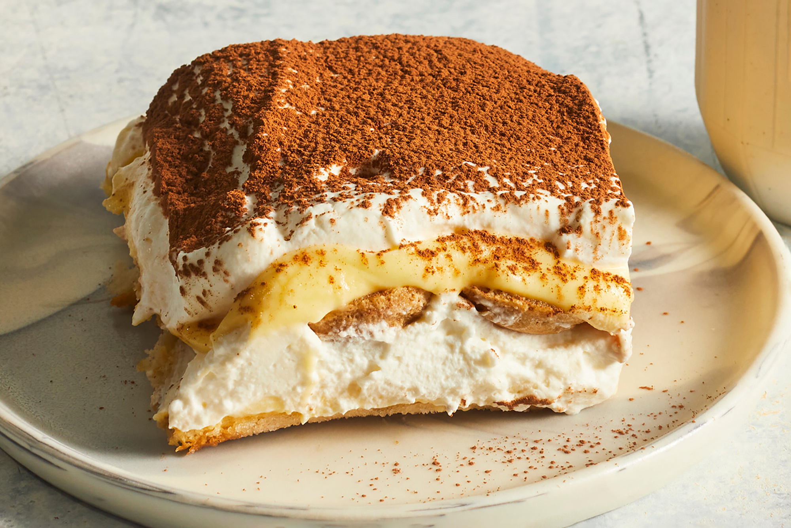

by Christine
Classic tiramisu, with its irresistible coffee flavor and lightly sweetened mascarpone, will never go out of style. This tiramisu recipe is a no-bake dessert that's sure to impress even the pickiest of eaters.
Whisk together egg yolks and sugar in a medium saucepan until well blended. Whisk in milk and cook over medium heat, stirring constantly, until mixture comes to a boil.
Boil gently for 1 minute, then remove from the heat and allow to cool slightly.
Cover tightly and chill in the refrigerator for 1 hour.
Beat cream and vanilla in a medium bowl with an electric mixer until stiff peaks form.
Remove egg yolk mixture from the refrigerator; add mascarpone cheese and whisk until smooth.
Combine coffee and rum in a small bowl. Split ladyfingers in half lengthwise and drizzle with the coffee mixture.
Arrange 1/2 of the soaked ladyfingers in the bottom of a 7x11-inch dish. Spread 1/2 of the mascarpone mixture over the ladyfingers, then spread 1/2 of the whipped cream over top. Repeat layers once more. Sprinkle cocoa powder over top.
Cover and refrigerate until set, 4 to 6 hours.